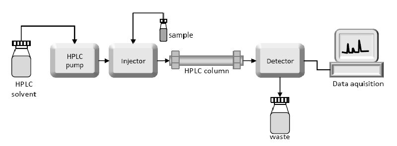

Formalising Laboratory Reporting Guidelines with Semantic Web Technologies
a Case in Column Chromatography
Created by Dena Tahvildari / @demontanaa
PhD Candidate -- VU Amsterdam and Wageningen UR
Supervisors: Prof. Guus Schreiber, Prof. Jan Top
email: d.tahvildari@vu.nl
We are exploring the role of semantics on authoring a reproducible methodology reports
- Motivation
- Research question
- Method
- Results
- Discussion
Motivation
Guidelines for reporting an experiment
- they can be imprecise or ambiguous due to the use of natural language
- no computational support

the quality of laboratory method descriptions
- some of them present insufficient granularity
- they can be imprecise or ambiguous

Hypothesis is:
an explicit representation of the reporting guidelines can contribute to the quality of descriptions
Main Research Question
Can a formal representation of reporting guidelines contribute to the quality of the laboratory method description?
Can MIAPE reporting guidelines be used as a knowledge acquisition source to create ontology?
Method to extract and represent information
- select a use case -- MIAPE-CC
- create vocabulary from MIAPE-CC reporting guidelines
- evaluation: we measured the occurrence of the extracted terms in the material and method sections.
Case description
Column chromatography experiment
creating vocabulary
- scope: 7 classes were identified
- terms were manually extracted from the guideline:
in total 83 terms were collected
evaluation
- create a corpus: collect "material and method sections" from publications
- conduct a term occurrence experiment
Results
The word occurrence measurement showed that from 83
terms in the vocabulary, 40 terms never occurred in any of
the method description sections (48%). The 43 remaining
terms occurred at least in one method section (51%)
| classes | never occurred | occurred |
| general descriptions | 4 | 1 |
| Sample | 9 | 8 |
| Equipment | 22 | 2 |
| Mobile Phase | 0 | 2 |
| Column Run | 0 | 5 |
| pre and post run processes | 2 | 6 |
| Column Output | 13 | 9 |
Explanations
we consulted a domain expert and qualitatively analysed the data by inspecting the selected method sections.
- authors do not report on the general information in the method sections
- authors do not use the terminology related to the high level class
Branched sugar arabinon was obtained from British Sugar – Mcleary.
- authors use synonyms
Discussion
- Descriptions often refer to another article in which the method is described, particularly for frequently reused methods.
- Some information may only be mentioned in the title. For example, the full name of the column may be mentioned in the title, and from then on they will only use the word ‘column’, as it should be clear what sort of column.
we argue that:
the reproducibility of an experimental method description is indebted to the existence of minimum information about that experimentWe learned that:
our present method does not recognize the synonyms, abbreviations, and instances.limitations of our method:
1. No semantic relations.2. Low the sample size (N=62).